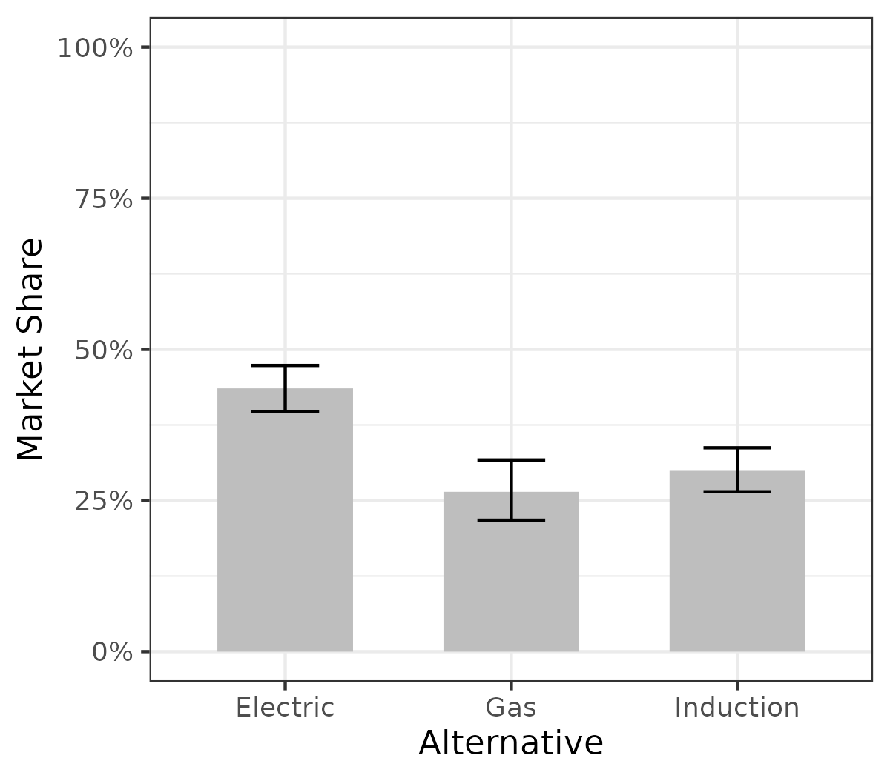

Cooktop Preference Analysis
Team Cooktop
Abstract
Our project is to identify people’s preferences for different types of stoves –Gas, Electric and Induction. The motivation behind this study is the US Government’s proposed shift to transition from gas to electric/induction stoves for safety and environmental reasons.
Our preliminary research about Cooktop types helped us determine the features people are interested in while purchasing cooking stoves: Type, Final Cost, Number of Burners, Average Annual Usage Cost and Indoor Air Quality. Using these attributes, we are designing a survey and will be performing a Conjoint analysis of the results to better understand user preferences. The eventual goal is to be able to provide insights to policymakers for refining existing policies and facilitating a smooth shift from gas to electricity. Some of the insights we have gained from our pilot analysis were including both gender and Age in the preliminary questions would help us better understand our audience and that our exclusion criteria in the survey design should only be for underage individuals as we have limited resources for conducting surveys. The exclusion criteria of residence in the DMV region and Home Ownership should ideally be moved upstream to the respondents’ selection platform ie. MTurk
Introduction
Cooking is an essential part of daily life, and the cooktop individuals choose can significantly impact their culinary experience. Whether an individual is a professional chef or simply enjoys preparing meals at home, their preferences for cooktop types can vary widely. On the other hand, the shift from traditional gas stoves to induction or electric stoves has been a rising debate among climate advocates who have been proposing a reduction of fossil fuel usage. Considering all these factors, the US government brought in a law (Inflation Reduction Act 2022) which amongst many other considerations is subsidies to homeowners who switch from gas to Electric/Induction Stoves.
The motivation behind our study is the proposed shift from gas to electric/Induction and the practical challenges that will come during its implementation. There is a genuine individual safety concern with gas cooktops and their adverse effects on the environment, on the other hand, the concerns of the people who are being asked to switch are equally valid. The cost differential, reliability, and efficacy while preparing certain cuisines are just some of the primary concerns that come up when considering a transition from gas to electric/induction.
Type of Cooktops:
Gas Cooktop - Gas Cooktops work on natural gas which is ignited and the flame itself is the source of heat. It was patented by James Sharp in England in 1826 and has been an integral part of most households since the 1920’s.
Electric Cooktop - Electric cooktops have an electrical current that flows through a metal coil underneath the glass or ceramic surface. The coil becomes hot and starts glowing due to the electrical resistance. It will transfer its heat through the glass using infrared energy. It was patented in 1896 by William Hadaway.
Induction Cooktop - Induction cooktops generate heat by combining electricity and the magnetic properties found in most pots and pans. Induction Cooktops were first released to the public at the Chicago “Century of Progress” World’s Fair in 1933.
Product Attributes and Decision Variables
We have limited our study to easily quantifiable attributes like Type of stove, Final Cost, Number of Burners, Average Annual Usage Cost, and Indoor Air Quality to understand user preferences as these are readily available and widely understandable. Reliability of technology and Cooking Efficacy are factors that are beyond the users’ control and that is why we have not considered those.
| Attributes | Type | Value / Range |
|---|---|---|
| Cooktop Type | Discrete | Gas, Electric, Induction |
| Final Cost Price | Continuous | 500, 700, 900, 1100, 1300, 1500 |
| Average Annual Usage Cost | Continuous | 50, 60, 70, 80, 90, 100 |
| Number of Burners | Discrete | 3, 4, 5 |
Survey Design
Eligibility
Our eligibility criteria was Homeowners in US. We chose homeowners because Cooktops are bought by Homeowners and we wanted to gauge the preferences of the people. We had earlier thought about restricting ouselves to the DMV region but we could not find enough survey participants so we expanded our criteria. This was in addition to the necessary requirement of being over 18 and providing consent for the survey.
Respondent information
Along with the eligibility question, we were interested in obtaining information of people owning their household and how often they are cooking at home. We asked about the respondents’ Year of Birth, their place of residence, and their frequency of cooking. We also collected information about gender, salary range and if they have a gas connection in their homes.
Attributes and levels for Conjoint Quesitons:
Our conjoint questionnaire consisted of 8 questions after filtering out people from eligibility questions. Each question consists of 3 choices with each type of cooktop, final cost price, average annual usage cost and number of burners. After asking their preference questions, we asked for the heating efficiency and concerns of emissions from each respondent.
Educational material presented to the respondents.
- Cooktop type: Type of cooktop you prefer between gas, electric and induction.
- Final cost price: Total price to buy and setup the stove to get it running including taxes
- Average annual usage cost: Average price/yr to maintain the stove, like the price paid to gas or electricity
- Indoor air quality: Quality of the air in a home, school, office, or other building environment
- Number of burners in the cooktop: 3, 4, 5
- Emissions: Average amount of carbon emissions your stove will emit in a year
- Heating efficiency: This is time taken by the stove to reach cooking temperatures. Induction stoves take the shortest time to reach cooking temperature followed by electric and gas stoves.
- Induction cookware: Induction compatible cookware are required while using Induction stoves. You can tell if your cookware is suitable for induction cooking if it has a coil symbol on the base, or if a magnet clings firmly to the cookware’s underside. If you test a cookware and the magnet only sticks loosely to the base, you may find the cookware does not heat as effectively.
Example figure of a random Conjoint Question

Data Analysis
Sample Description
We had 210 respondents for our survey who completed all the choice questions after filtering for consent and eligibility criteria. After that, we filtered out people who did not spend a reasonable time on the survey (those who went too fast), and we were left with 189 respondents. We further analyzed our respondents based on their demographics like age bracket, income range, and gender.
| Demographic Variable | Response Options |
|---|---|
| Gender | Male, Female, Trans male/trans man, Trans female/trans woman Gender queer/gender non-conforming, prefer not to say |
| Education Level | Less than High school, High School, Bachelor Degree, Masters Degree, Vocational, Associate Degree, Prefer not to say |
| Income | Less than $10,000, $10,000-$20,000, $50,001-$100,000, $100,001 or more, prefer not to say |
| Ethnicity | Asian, African American or Black, White, Hispanic or Latino, American Indian or Alaska Native, Native Hawaiian or Pacific Islander, Prefer not to say |
Education Distribution:
Code
education_info <- c("bs", "vocational", "college_some", "HighSchool", "grad", "associate", "N/A")
number_of_people <- c(84, 6, 24, 17, 33, 24, 1)
df_Education <- data.frame(Education = education_info, Count = number_of_people)
ggplot(df_Education, aes(x=reorder(Education, -Count), y=number_of_people)) +
geom_bar(stat='identity')+
geom_col(fill = "grey") +
labs(x = 'Edu Level', y = 'Count')Income Distribution:
Code
income_info <- c("<10", "20-50", "50-100", "<100", "10-20", "N/A")
number_of_people <- c(5, 46, 80, 50, 7, 1)
df_Income <- data.frame(Income = income_info, Count = number_of_people)
ggplot(df_Income, aes(x=reorder(Income, -Count), y=number_of_people)) +
geom_bar(stat='identity')+
geom_col(fill = "grey") +
labs(x = 'Income Level', y = 'Count')Based on our respondents distribution, we have highest percentage of bachelor’s degree, and
Data cleaning
- We added formr respondents data per each survey.
- We combined them into one data frame
- We filtered out respondents who responded “No” to consent age and consent understanding
- We filtered out respondents who did not finish the survey.
- We filtered out respondents who replied too fast using the time column.
- We filter people who got our attention-check questions wrong
- The remaining data was our analysis and model-building data.
Modeling
For our final analysis, we have built multiple models which are listed below.
Simple Logit Model
A simple preference based model with all features (Final Cost Price, Average Annual Cost Price, Number of Burners and Type of Cooktop)
\[ u_{j} = \beta_{1}x_{j}^{final\;cost\;price} + \beta_{2}x_{j}^{average\;annual\;usage\;cost} +\beta_{3}\delta_{j}^{number\;of\;burners\;4} +\beta_{4}\delta_{j}^{number\;of\;burners\;5} +\beta_{5}\delta_{j}^{cooktop\;type\;electric} +\beta_{6}\delta_{j}^{cooktop\;type\;induction} \]
Code
knitr::include_graphics("./figs/model_simple_utility.png")Observations:
- We observe a drop in utility with the increase in price for both “Final Cost of Burners” and “Average Annual Usage Costs” which is expected behavior.
- For the “# of Burners”, we can clearly see that there is a significant increase in utility from 3 stove burner to 4 stove burners but not so much while moving from 4 to 5 burners. We can infer from this that companies should focus more on 4 burners than 5 burners as the increase in utility is low.
- The final observation from the “Cooktop Type” graph is that utility for Induction stove is higher than electric and gas.
Mixed Logit Model
Code
knitr::include_graphics("./figs/plot_mxl_wtp.png")Observations:
- Analyzing our model coefficients reveals that cooktops with 5 burners and electric functionality exhibit positive coefficients, indicating a preference among consumers.
- The average annual usage cost coefficient is around 0, and cooktops with 4 burners show negative coefficients. This suggests a consumer preference for 5 burners over fewer, and an inclination towards electric cooktops compared to other types.
- These findings underscore the significance of our analysis on cooktop type and the number of burners in influencing consumer preferences when purchasing cooktops.
Subgroup Analysis
For subgroup analysis, we decided to identify two groups in data based on their educational qualifications. Those who completed their Master’s or bachelor’s degree were marked as ‘high’ in education level and others with lower educational qualifications were marked as ‘low’.
Education Level - High
Code
knitr::include_graphics("./figs/barplot_mnl_wtp_high.png")Education Level - Low
Code
knitr::include_graphics("./figs/barplot_mnl_wtp_low.png")
Observations:
- There is a positive Willingness to Pay for 4 and 5 burner stoves in both lower and higher education groups.
- The negative Willingness to Pay for ‘Average Annual Usage Cost’ is more in lower education group which indicates they are willing to pay a “higher” total upfront cost to decrease their Average annual usage cost.
Results
Willingness to Pay Model
Code
knitr::include_graphics("./figs/model_wtp_cooktop_4a.png")Code
knitr::include_graphics("./figs/model_wtp_4a_barplot.png")
Observations:
- From the WTP model, we can see that there is a strong negative WTP for ‘Average annual usage cost’ and the respondents are willing to pay a “higher” total upfront cost to decrease their Average annual usage cost.
- There is a significant WTP increase from 3 burner to 4 burner (roughly $250) but a small WTP increase from 4 burner to 5 burner.
- There is significant WTP increase from gas to Induction cooktop type (roughly $350) but a small WTP increase from gas to Electric burner.
Simulation
Code
knitr::include_graphics("./figs/sim.png")
In the baseline case where we have taken the approximate average market price of each type of stove (gas $500, electric $800 and induction $1300), based on our model, the market share of Induction is close to 35% , gas ~25% and electric ~40%.
Code
knitr::include_graphics("./figs/sim_multi.png")In the above graph, we are showing three scenarios with different prices of the stoves (Gas, Electric and Induction) and their respective market shares.
Sensitivity Analysis
Code
knitr::include_graphics("./figs/share_price_plot.png")The above plot is based on the simulation of the model based on the baseline. Final Cost Price decreases as price increases. The market share drops from 60% to 20% as we increase the price from $500 to $1500
Final Recommendations and Conclusions
- The change in utlity or increase in willingness to pay from 3 burner to 4 burner is much higher than 4 burner to 5 burner so companies should focus more on 4 burner stoves.
- There is a high willingness to pay for Induction Stoves compared to Gas stoves which indicates that consumers understand the benefits of Induction stove.
- The average price difference between induction and gas stove is still pretty high and the higher WTP does not cover it so a decrease in price or subsidy of Induction stoves will be required to increase the market share of Induction stoves to over 50%.
Limitations
- If the sample size would have been larger than currently available data, analysis would have made much more sense with respect to decision making. The Power analysis we conducted showed us that we needed roughly 450 participants to validate our findings.
- Having region specific knowledge with respect to utilities and policies would have helped us tailor our survey in a much more granular level which will address the main problem.
- Having stringent guidelines on the target population of the survey respondents would have been better to receive more authentic data to analyze, for example taking the survey to people in person rather than doing it online.
Code
knitr::include_graphics("./figs/power_analysis.png")Attributes
All group members equally contributed.
Appendix
Welcome to our survey!
Thank you for participating in this survey, which is part of a research effort by The George Washington University. For this survey, we will ask you about your preferences for different types of cooktops.
Consent form
This survey is being conducted by students at The George Washing University. We will not be collecting any identifying data, such as your name or address. The whole survey will take approximately 10 to 15 minutes to complete. Your participation is voluntary and you may stop the survey at any time.
If you would like to participate, please answer the following questions:
I am age 18 or older
- Yes
- No
I have read and understand the above information
- Yes
- No
Do you own a home?
- Yes
- No
Thanks!
Now that you’ve shared a bit about yourself, we’d like you to consider that you can choose cooktops with different attributes.
Let’s learn about these attributes.
Type
Type refers to the type of cooktop. There are three types of cooktops as Gas, Electric and Induction cooktops
| Gas | Electric | Induction |
|---|---|---|
 |
 |
 |
Gas Cooktop - Gas Cooktops work on natural gas which is ignited and the flame itself is the source of heat. It was patented by James Sharp in England in 1826 and has been an integral part of most households since the 1920s.
Electric Cooktop - Electric cooktops have an electrical current that flows through a metal coil underneath the glass or ceramic surface. The coil becomes hot and starts glowing due to the electrical resistance. It will transfer its heat through the glass using infrared energy. It was patented in 1896 by William Hadaway.
Induction Cooktop - Induction cooktops generate heat by combining electricity and the magnetic properties found in most pots and pans. Induction Cooktops were first released to the public at the Chicago “Century of Progress” World’s Fair in 1933
Introduction video for understanding Induction Cooktop :
Attributes Information
Final Cost Price
- Final Cost Price refers to the full price you will pay (including taxes) for the cooktops
Usage Cost
- Usage Cost refers to average annual usage cost for particular type of cooktop
Indoor air Quality
- Quality of air at home after using cooktop
number of burners
- The number of burners for particular type of cooktop
We’ll now begin the choice tasks. On the next few pages we will show you three types of cooktops and we’ll ask you to choose the one you most prefer.
For example, if these were the only cooktops available, which would you choose?
[mc_button type question with the following three options]
| Option: | Option 1 | Option 2 | Option 3 |
 |
|
|
|
| Cost: | $500 | $800 | $1,500 |
| Type: | Induction | Induction | Induction |
| number of burners: | 4 | 4 | 4 |
Great work!
We will now show you 8 sets of choice questions starting on the next page.
| Option: | 1 | 2 | 3 |
 |
 |
 |
|
| cost: | 800 | 800 | 500 |
| Cooktop Type: | Gas | Electric | Induction |
| Average Annual Usage Cost: | 6 | 7 | 6 |
| number of burners: | 3 | 5 | 4 |
Thank you for your feedback!
The next section will ask some basic questions about cooktops and air quality.
Please answer to the best of your knowledge.
We’re almost done! We’d just like to ask just a few more questions about you which we will only use for analyzing our survey data.
- Do you have induction cookware? Different type of cooktops? (please state):
- Yes
- No
- Not aware
- Are you concerned about the heating efficiency of your cooktop?
- Concerned
- Neutral
- Not aware
- How concerned are you about carbon emission from cooktop?
- Concerned
- Neutral
- Not aware
- How often do you cook?
- Often
- Sometimes
- Never
- Which utilities do you have at your home?
- electricity
- gas
- not aware
Nice job!
We’re almost done! We’d just like to ask just a few more questions about you which we will only use for analyzing our survey data.
- In what year were you born?
(Drop down menu including Prefer not to say and years 1920 - 2003)
- What is your current gender identity? Different identity (please state):
- Male
- Female
- Trans male/ trans man
- Trans Female/ trans woman
- Gender queer/ gender non-conforming
- Prefer not to say
(3)I identify my race as (select all that apply): Different identity (please state):
- Asian
- African American or Black
- White (not of Hispanic or Latino origin)
- Hispanic or Latino
- American Indian or Alaska Native
- Native Hawaiian or Pacific Islander
- Prefer not to say
- What is the highest degree or level of school you have completed? If currently enrolled, please use the highest degree received.
- Less than a high school diploma
- High school degree or equivalent (e.g. GED)
- Some college or univeristy, no college degree
- Trade/technical/vocational training, no degree awarded
- Associate’s degree (e.g. AA, AS)
- Bachelor’s degree (e.g. BA, BS)
- Graduate or Professional Degree (e.g. PhD, MD, JD, MS)
- Prefer not to say
- What is your annual household income (from all sources) before taxes and other deductions from pay?
- Less than $10,000
- $10,000 - $19,999
- $20,000 - $49,999
- $50,000 - $99,999
- More than 100,000
- Prefer not to say
- What is your Zipcode?
(Open text response)
Please let us know if you have any other thoughts or feedback on this survey.
Your feedback will help us make future improvements :)
(Open text response)
Your completion code is: 7.09897^{5}
Finish
SURVEY LINK: [COOKTOP SURVEY LINK(“https://cooktop-final.formr.org/”)
Acknowledgement
A special thank you is extended to Dr. John Paul Helveston for his support throughout this research project.